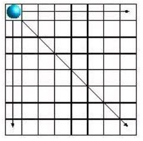
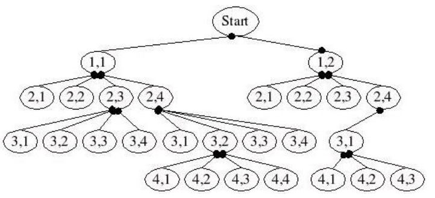

八皇后
November 30, 2021西洋棋的皇后可以直線前進，吃掉遇到的棋子，如果棋盤上有八個皇后，這八個皇后如何相安無事地放置在棋盤，這個問題最早由西洋棋棋手馬克斯·貝瑟爾（Max Bezzel）於 1848 年提出，E.W.Dijkstra 與 N.Wirth 曾經於 1970 年與 1971 年，用這個問題來講解程式設計技巧。
解法思路
棋盤基本上可以用遞迴求解，然而如何減少遞迴的次數？在八皇后的問題中，不必檢查全部的格子，例如若某列檢查過，該該列的其他格子就不用再檢查了，這稱為分支修剪或回溯法（backtracking）。

檢查時先判斷是否在已放置皇后的可行進方向上，若沒有再行放置下一個皇后，如此就可減少遞迴的次數，例如以下為修剪過後的遞迴檢查路徑：

八皇后會有 92 個解答，如果考慮棋盤的旋轉，扣去對稱的，會有 12 組解。
程式實作
#include <stdio.h>
#include <stdlib.h>
#define N 8
void backTrack(int*, int*, int*, int*, int, void (*)(int*));
void print(int*);
int main(void) {
int column[N] = {0}; // 同行是否有皇后
int slash[2 * N] = {0}; // 右上至左下是否有皇后
int backSlash[2 * N] = {0}; // 左上至右下是否有皇后
int queens[N] = {0};
backTrack(column, slash, backSlash, queens, 0, print);
return 0;
}
void backTrack(int* column, int* slash, int* backSlash,
int* queens, int i, void (*take)(int*)) {
if(i >= N) {
take(queens);
}
else {
int j;
for(j = 0; j < N; j++) {
if(isVisitable(i, j, column, slash, backSlash)) {
queens[i] = j;
column[j] = slash[i + j] = backSlash[i - j + N] = 1;
backTrack(column, slash, backSlash, queens, i + 1, take);
column[j] = slash[i + j] = backSlash[i - j + N] = 0;
}
}
}
}
int isVisitable(int i, int j, int* column, int* slash, int* backSlash) {
return !(column[j] || slash[i + j] || backSlash[i - j + N]);
}
void print(int* queens) {
int x, y;
for(y = 0; y < N; y++) {
for(x = 0; x < N; x++) {
printf(" %c", queens[y] == x ? 'Q' : '.');
}
printf("\n");
}
printf("\n");
}
import java.util.*;
import static java.lang.Math.abs;
import static java.lang.System.out;
class Queen {
final int x, y;
Queen(int x, int y) {
this.x = x;
this.y = y;
}
public String toString() {
return String.format("(%d, %d)", x, y);
}
}
public class Queens {
public static List<List<Queen>> queens(int n) {
return placeQueens(n, n);
}
public static List<List<Queen>> placeQueens(int n, int k) {
List<List<Queen>> queensList = new ArrayList<>();
if(k == 0) {
queensList.add(new ArrayList<Queen>());
}
else {
for(List<Queen> queens : placeQueens(n, k - 1)) {
for(int column = 1; column <= n; column++) {
Queen queen = new Queen(k, column);
if(isSafe(queen, queens)) {
List<Queen> qs = new ArrayList<>();
qs.addAll(queens);
qs.add(queen);
queensList.add(qs);
}
}
}
}
return queensList;
}
public static boolean isSafe(Queen queen, List<Queen> queens) {
for(Queen q : queens) if(inCheck(queen, q)) {
return false;
}
return true;
}
public static boolean inCheck(Queen q1, Queen q2) {
return q1.x == q2.x || // 同列
q1.y == q2.y || // 同行
abs(q1.x - q2.x) == abs(q1.y - q2.y); // 對角線
}
public static void main(String[] args) {
for(List<Queen> queens : queens(8)) {
for(Queen queen : queens) {
out.print(queen);
}
out.println();
}
}
}
def queenss(n):
def placeQueens(k):
return [[]] if k == 0 \
else [[(k, column)] + queens
for queens in placeQueens(k - 1)
for column in range(1, n + 1)
if isSafe((k, column), queens)]
return placeQueens(n)
def isSafe(queen, queens):
return all(not inCheck(queen, q) for q in queens)
def inCheck(q1, q2):
return (q1[0] == q2[0] or # 同列
q1[1] == q2[1] or # 同行
abs(q1[0] - q2[0]) == abs(q1[1] - q2[1])) # 對角線
for qs in queenss(8):
for q in qs:
print(q, end="")
print()
def queens(n: Int): List[List[(Int, Int)]] = {
def placeQueens(k: Int): List[List[(Int, Int)]] = {
if(k == 0) Nil
else for {
queens <- placeQueens(k - 1)
column <- 1 to n
queen = (k, column)
if isSafe(queen, queens)
} yield queen :: queens
}
placeQueens(n)
}
def isSafe(queen: (Int, Int), queens: List[(Int, Int)]) =
queens forall (q => !inCheck(queen, q))
def inCheck(q1: (Int, Int), q2: (Int, Int)) =
q1._1 == q2._1 || // 同列
q1._2 == q2._2 || // 同行
(q1._1 - q2._1).abs == (q1._2 - q2._2).abs // 對角線
queens(8).foreach(q => {
q.foreach(print)
println()
})
```ruby
def queenss(n)
placeQueens(n, n)
end
def placeQueens(n, k)
k == 0 ? [[]] : placeQueens(n, k - 1).map { |queens|
(1..n).map { |column| {x: k, y: column} }
.find_all { |queen| isSafe(queen, queens) }
.map { |queen| [queen] + queens }
}.reduce(:+);
end
def isSafe(queen, queens)
queens.all? { |q| !inCheck(queen, q) }
end
def inCheck(q1, q2)
q1[:x] == q2[:x] or # 同列
q1[:y] == q2[:y] or # 同行
(q1[:x] - q2[:x]).abs == (q1[:y] - q2[:y]).abs # 對角線
end
queenss(8).each do |qs|
qs.each do |q|
print "(#{q[:x]}, #{q[:y]})"
end
puts
end
var queens = function() {
var column = [];
var slash = [];
var backSlash = [];
var queens = [];
function backTrack(n, i, take) {
if(i >= n) {
take(n, queens);
}
else {
for(var j = 0; j < n; j++) if(isVisitable(i, j, n)) {
queens[i] = j;
column[j] = slash[i + j] = backSlash[i - j + n] = 1;
backTrack(n, i + 1, take);
column[j] = slash[i + j] = backSlash[i - j + n] = 0;
}
}
}
function isVisitable(i, j, n) {
return !(column[j] || slash[i + j] || backSlash[i - j + n]);
}
return function(n, take) {
backTrack(n, 0, take);
};
}();
queens(8, function(n, qs) {
var layout = '';
for(var y = 0; y < n; y++) {
for(var x = 0; x < n; x++) {
layout += (qs[y] === x) ? ' Q' : ' .';
}
layout += '\n';
}
print(layout);
});
queens n = placeQueens n
where placeQueens k =
if k == 0 then [[]]
else [(k, column) : queens | queens <- placeQueens (k - 1),
column <- [1..n],
isSafe (k, column) queens]
isSafe queen queens = all (\q -> not $ inCheck queen q) queens
inCheck (q1x, q1y) (q2x, q2y) = q1x == q2x ||
q1y == q2y ||
abs (q1x - q2x) == abs (q1y - q2y)
main = sequence [print qs | qs <- queens 8]
line([X, _], [X, _]) :- !.
line([_, Y], [_, Y]) :- !.
line([Qx1, Qy1], [Qx2, Qy2]) :-
Dx is abs(Qx1 - Qx2), Dy is abs(Qy1 - Qy2), Dx =:= Dy.
safe(Q, [H|T]) :- not(line(Q, H)), !, safe(Q, T).
safe(_, []).
range(From, To, Xs) :- findall(X, between(From, To, X), Xs).
forY([Y|T], X, Queens, [NQueens|QueensLt]) :-
safe([X, Y], Queens), !,
NQueens = [[X, Y]|Queens],
forY(T, X, Queens, QueensLt).
forY([_|T], X, Queens, QueensLt) :-
forY(T, X, Queens, QueensLt).
forY([], _, _, []).
forQueens([HQueens|T], X, Ys, QueensLt) :-
forQueens(T, X, Ys, TQueensLt), !,
forY(Ys, X, HQueens, HQueensLt),
append(TQueensLt, HQueensLt, QueensLt).
forQueens([], _, _, []).
forX([X|T], Ys, QueensLt) :-
forX(T, Ys, TQueensLt), !,
forQueens(TQueensLt, X, Ys, QueensLt).
forX([], _, [[]]).
queens(N, QueensLt) :-
range(1, N, Xs),
range(1, N, Ys),
forX(Xs, Ys, QueensLt).
printQueens([Queen|T]) :- write(Queen), printQueens(T).
printQueens([]) :- nl.
printQueensLt([Queens|T]) :- printQueens(Queens), printQueensLt(T).
printQueensLt([]) :- nl.
main(_) :-
queens(8, QueensLt),
printQueensLt(QueensLt).
# 我寫的玩具語言 https://github.com/JustinSDK/toy_lang
from '/lib/math' import abs
def queenss(n) {
def placeQueens(k) {
if k == 0 {
return [[]]
}
def collect(queens) {
(return range(1, n + 1).filter(column -> isSafe([k, column], queens))
.map(column -> queens.concat([[k, column]]))
.reduce((acc, qs) -> acc.concat([qs]), []))
}
return placeQueens(k - 1).reduce((acc, queens) -> acc.concat(collect(queens)), [])
}
return placeQueens(n)
}
def isSafe(queen, queens) {
return queens.all(q -> not inCheck(queen, q))
}
def inCheck(q1, q2) {
(return q1.get(0) == q2.get(0) or
q1.get(1) == q2.get(1) or
abs(q1.get(0) - q2.get(0)) == abs(q1.get(1) - q2.get(1)))
}
def printQS(qs) {
qs.forEach(print)
println()
}
queenss(8).forEach(printQS)